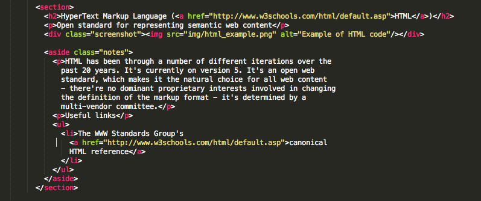
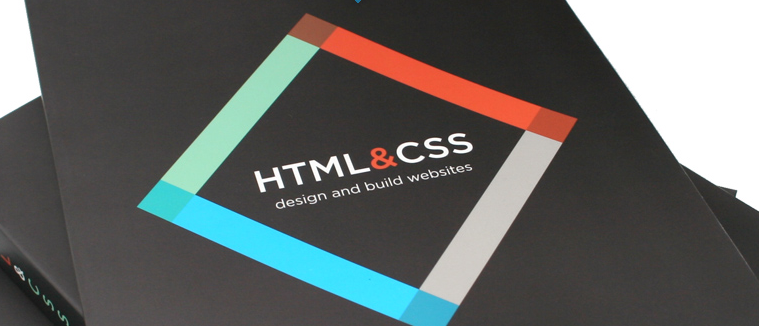
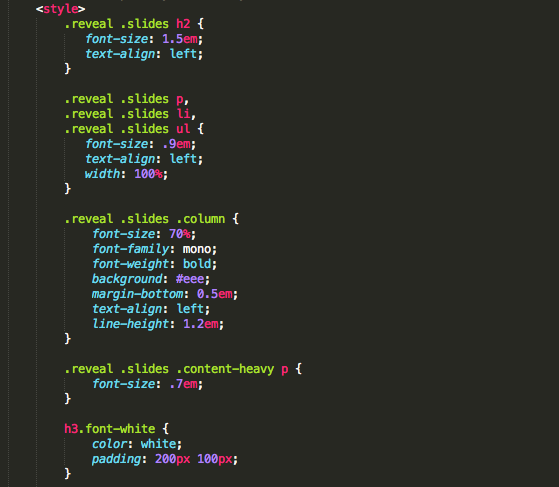

Catalyst
Drupal Content Managers
Presented by Julia Larsen Drupal Developer
Housekeeping
Agenda
- Intro to the web
- HTML / CSS
- Writing for web
- Accessibility
- Drupal for content editors
- Overview
- Content types, nodes, and the WYSIWYG
- Menus
- Users and roles
- Taxonomy
- Blocks
- Drupal 8 (sneak preview)
- More advanced Drupal (time-permitting)
The Web is made of...
- HTML: Content
- CSS: Presentation
- Javascript: Interactive effects
- HTTP: Request mechanism
- URL: Address to the resource
HyperText Markup Language (HTML)
Open standard for representing semantic web content

Each HTML element tells the browser something about the information that sits between its opening and closing tags.

Jon Duckett
Some fundamental tags
paragraph
<h1>Heading 1<h1>
<h2>Heading 2<h2>
<h3>Heading 3<h3>
- Unordered list
- Ordered list
list item 
Anchor or linkUseful HTML resources
Cascading Style Sheets (CSS)
Open standard for layout and presentation

Why Cascading Style Sheets (CSS)?
To separate content from presentation
- allows for machine readability
- allows same content to be used across different media devices: browser, tablet, phone, TV, fridge, braille etc.
See CSS Zen Garden for some great examples.
Javascript
Scripting language built into all modern browsers

Javascript in action:
HyperText Transfer Protocol / Secure
http://
vs
https://
Uniform Resource Locator (URL)
- Request made: http://www.somehost.com/path/file.html
- Your browser asks your computer to get the IP address corresonding to www.somehost.com
- Your browser sends that IP this request
- If the server is listening, your browser gets a response from www.somehost.com
- Your browser receives HTML which it turns into a web page
The basics of web writing
- Visitors have (approximately) zero patience
- Less is more
- Lists are great
- Simple, short, sections
Tone
- Be authentic
- Be consistent
- Be appropriate
Compare
Casual example: http://www.powershop.co.nz
Formal example: http://www.justice.govt.nz
Style guide
Some useful links
dsc001.jpg, image
Text equivalents for images
- "Alt text" is alternative text if the image isn't displayed
- Provide alt text for all content images
- Make the alt text succinct, 4-6 words, avoid use of "image of"
- Image links: alt text describes the function of the image
- Decorative images: no alt text eg alt=""
Use semantic html markup
- Heading tags for headings
This is a heading
- List tags for lists
- This is an ordered (numbered) list
- This is an unordered list
Descriptive links
Link text should:
- Describe the link's purpose
- Be consistent
- Never just be "Click here" (or similiar)
Videos
- Provide a transcript, captions, and/or sign language translation for all audio and video with speech
- Provide a “described” version of a video when description is necessary for unsighted users to understand content.
Do not rely on visual cues for meaning
- Do not require users to perceive font, color, or other styling changes in order to understand meaning
Useful accessibility resources
- NZ govt web toolkit: http://bit.ly/1KXmYNZ
- http://webaim.org/
- http://webaim.org/resources/contrastchecker
Do the Accessibility course!
Julius Serrano - Accessibility Expert
An overview of Drupal
- Open source PHP CMS platform
- Powers million of websites
- Current (stable release) is version 7
- 11,151+ contributed modules for Drupal 7
- 96,476+ people contributing to the project
- Drupal 8 - ~11 critical issues
Drupal.org
Today's sandbox
http://live-ccmc.pantheon.io/Content types and nodes
- A content type is a pre-defined collection of fields
- Drupal comes with 2 content types defined; basic page and article
- A node is an individual instance of a content type, eg the "about us" page is a node
WYSIWYG in action
- Initial ckeditor configuration
- Button layout
- Paste from word
- Embedding media
- Spell checkers
Your turn!
- Headings
- Bold
- Italics
- Tables
- Blockquote
- Remove format
- Alignment
- Anchor/Links
- Images
- Videos
- Pasting from word
Menus
- Hierarchical list of links
- Multiple menus on every Drupal site
- The "Main menu" is used for the main navigation of the website
Users and roles
- User: An individual that is assigned one or more role/s
- Role: A set of permissions
- Permissions: The ability to view, add, change, delete, administer aspects fo the site
Taxonomy
Categorising content
- Terms are grouped into vocabularies, eg "Fruit"
- Taxonomy terms are added to a vocabularly, eg "Banana", "Apple"
- You may have as many vocabularies as your website needs
- You can add taxonomy fields to vocabularies and terms (D7+)
Blocks
The boxes which can be made to appear in various regions of a Drupal website are called Blocks. (drupal.org)
- Blocks are able to be displayed in 1 region on 1 or many pages
- A block can be custom or contributed
- Visibility configurable by user, page, content type.
- Drag and drop to readjust order of blocks
D8 for content editors
- Mobile first
- Better previews
- In-context editing
- Drag-and-drop image uploads
- Blocks in multiple regions!
Other D8 features
- HTML5
- Better accessibility support
- Improved multi-lingual support
- Implementation of a RESTful web service API
Take a look!
What interests you?
- Linkit?
- Webform?
- Honeypot? (spam protection)
- Views?
- Panels?
- Bootstrap?
- Rules?
Learn more
- Drupal.org
- Drupal 8: https://www.drupal.org/8
- Catalyst Drupal Site Builder's course: http://bit.ly/1FsT3yZ
- Stack Overflow
- http://codekarate.com/blog/best-way-learn-drupal
- Wellington Drupal Meetup:
http://www.meetup.com/Wellington-Drupal-Meetup/ - Practice, experiment and ask questions!
Thanks to:
- Julius Serrano (Catalyst Accessibility Expert)
- Sean Hamlin (Drupal Dev)
- Dave Lane (Drupal Dev)
- This open source browser-based presentation software (Reveal.js) created by Hakim el Hattab.
- Devsaran (for our sandbox Drupal 7 theme)